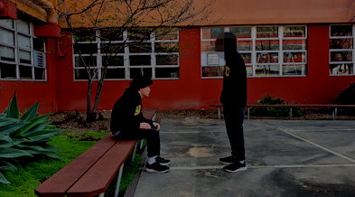

JARED LANGNER
( HE/HIM )
Portfolio: LINK
About the Artist
I started my journey in the digital art world in 2021. Currently, I'm the most proficient with 2D illustration, although I'm working to further my video editing prowess. After all, it is my favorite medium to work in.
Hanging In There
Sometimes negativity can feel overwhelming, for a wide range of reasons. For my video installation, I mainly chose to address impostor syndrome and anxiety. In terms of imposter syndrome, this is because there are times when I don't feel good enough as an artist, especially when comparing myself to others. As for anxiety, keeping in mind how I don't feel like I'm enough at times, this leads to me becoming stressed about the trajectory of my future. This is represented through an alternate version of me; my internal negativity manifesting into a physical being which I grapple with. However, as shown in the end of my video, there are support structures to help you; something or someone to help you keep going. Despite how tough life can get and how demotivating it can feel, you don't have to face all your problems alone; sometimes, you just have to be willing to reach out.
